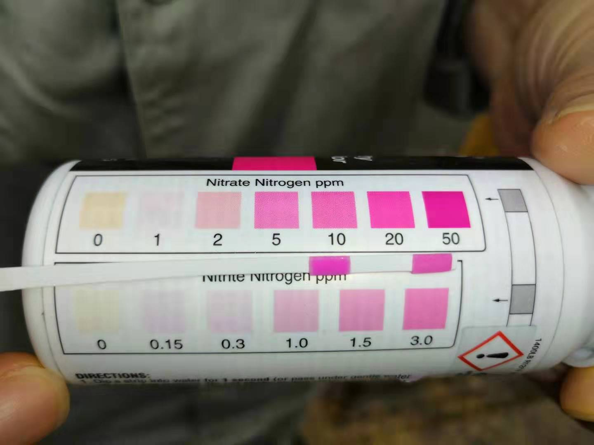

重庆某医药中间体污水厂生化池中毒，COD和氨氮排放超标，分析表明生化系统崩溃。在诺维信工程师的建议下，采取了一系列运营调整、并先后投加COD去除菌BioRemove 2350和氨氮去除菌BioRemove 5805到好氧池的方式，成功重建生化系统。保证COD和氨氮排放达标。
客户的运营团队、诺维信的工程师、和半点科技的支持团队的紧密合作是成功的关键。从出现问题开始进行了一系列调整。调整包括：
- 中毒原因排查
- 通过实验室试验评估来水毒性，排查并暂停有毒污水进入系统
- 运营调整
- 增加了好氧池曝气，但控制溶解氧不超过6PPM。
- 增加厌氧池的内循环。
- 好氧池投加活性炭增加物理吸附。
- 适当稳定排泥，并根据污泥浓度和运行参数，进行调整。
- 补充菌种
- 投加BioRemove 2350，补充COD去除菌的量
- COD去除效率上升和排放达标后，投加BioRemove 5805，补充好氧池的硝化菌数量，启动硝化反应。
依次投加BioRemove 2350和BioRemove 5805后，系统的COD去除能力和氨氮去除能力相继恢复，出水硝酸盐含量明显上升，说明硝化反应已经建立，生化系统恢复正常。参阅下图：
中毒后出水测不到硝酸盐，说明硝化系统已经崩溃了

调整后出水硝酸盐含量上升、氨氮下降

半点科技(苏州)有限公司专业从事环境保护，依托丹麦诺维信全球领先的生物增效技术，和其他多种高度集成的污水处理设备，利用化学和微生物等手段帮助提高和改善系统的COD、BOD、氨氮、总氮去除效率，除臭，污泥减量等，成为客户解决水、气、泥治理的技术服务商和产品供应商。
半点科技（苏州）有限公司
联系人：余经理，24小时服务热线：15995813412